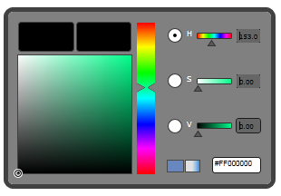

Skins can be applied to the control by setting the VisualStyle property defined in the Skin Manager class.
Steps to apply the skin
1. Add corresponding theming assembly in the sample project.
Naming Convention of Assembly - Syncfusion.Theming.SkinName
Example: Syncfusion.Theming.Blend
2. Set the VisualStyle property to the corresponding theme. It can be set either in XAML or in C#.
Table 71: VisualStyle Property
|
Property |
Description |
Type |
Data Type |
Reference links |
|
VisualStyle |
Sets the skins for the controls.
|
Attached Property |
Enum (VisualStyle) The options are provided as follows. · Default · Blend · Office2007Blue · Office2007Black · Office2007Silver · Office2010Blue · Office2010Black · Office2010Silver · Windows7 · VS2010 · Metro
|
|
The following code snippet explains how to set the VisualStyle property in XAML.
1. Add the following namespace in the sample.
|
[XAML] xmlns:theme="clr-namespace:Syncfusion.Windows.Controls.Theming;assembly=Syncfusion.Shared.Silverlight"
|
2. Set the VisualStyle property for the control as shown below.
|
[XAML] <syncfusion:BrushEdit Name="brushedit" theme:SkinManager.VisualStyle="Blend" />
|
The following code snippet explains how to set the VisualStyle property in C#.
1. Name the control using the Name attribute.
|
[XAML] <syncfusion:BrushEdit Height="200" Name="brushedit" Width="299" />
|
2. Add the following line in code behind file.
|
[C#] SkinManager.SetVisualStyle(brushedit,VisualStyle.Blend);
|
The output is as shown below.

Figure 1159: BrushEdit Blend Style